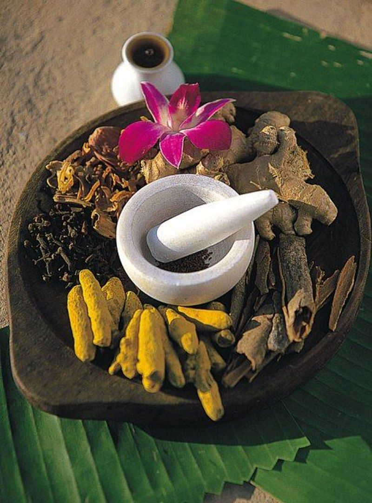

Conditions we support with Ayurvedic care
Ayurveda works best on long-standing, lifestyle-linked problems. Here is how we approach the concerns patients bring to our clinic.
Ayurvedic treatment for joint pain, knee pain and back pain
Long-standing pain is often linked to Vata imbalance, digestion and lifestyle. Our approach combines assessment, diet and routine changes, herbal guidance and local therapies such as Janu Vasti, Greeva Vasti and Pizhichil.
Discuss this with the doctor
Ayurveda for PCOD, PCOS and women’s health
Irregular cycles and hormonal imbalance often connect to digestion, stress and sleep. We build a gentle plan around your constitution, with attention to diet, routine and herbal support. We also guide couples on Garbhsanskar, the Ayurvedic approach to preparing for pregnancy.
Discuss this with the doctor
Ayurveda for diabetes, prediabetes and thyroid
Metabolic conditions respond to daily habits. We work on food timing, activity and herbal support alongside your regular doctor, so you manage your numbers with a clearer plan.
Discuss this with the doctor
Ayurvedic weight loss and weight management programme
Sustainable weight change starts with digestion and dosha. Expect a personalised diet, routine, and where suited, Panchakarma and massage therapies, not crash diets.
Discuss this with the doctor
Ayurvedic treatment for acne, skin problems and hair fall
Skin and hair reflect gut health and Pitta balance. We look at diet, stress and sleep, and plan cleansing and soothing therapies where needed.
Discuss this with the doctor
Ayurveda for stress, anxiety, insomnia and digestion
A restless mind and a restless gut often go together. Shirodhara, Abhyangam, breathing, yoga and meditation guidance, along with a steady routine, can help you feel settled again.
Discuss this with the doctor
We support and manage these conditions with a root-cause approach. We do not promise cures. For serious or sudden symptoms, see a hospital first.
Not sure where your concern fits?
Describe it in a message. We will tell you whether Ayurveda can help and which consultation to choose.